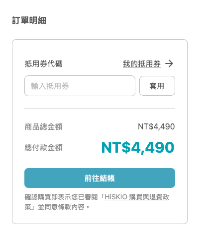
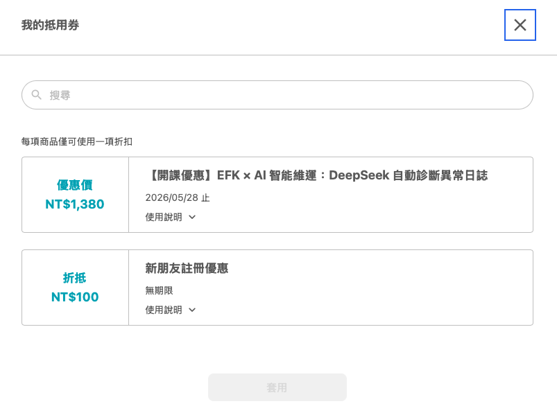
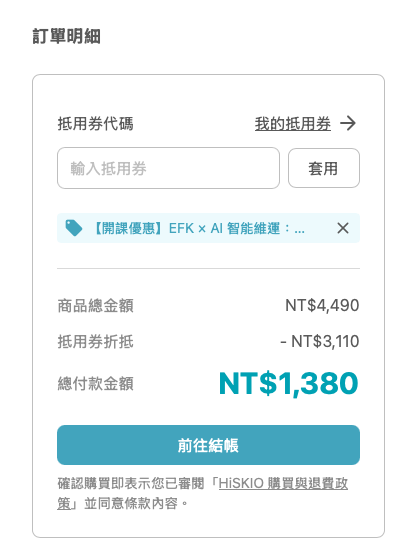

本篇說明 HiSKIO 抵用券的使用方式、種類差異、使用限制與退費規則。如何取得抵用券請參考 取得抵用券與優惠規則。
如何使用抵用券（購物車結帳）
通常你從優惠連結進入購買頁面時，系統會自動套用對應的抵用券。如果沒有自動套用，你可以在購物車頁面手動輸入或選擇抵用券。
1. 在購物車頁面點選「我的抵用券」（或直接輸入抵用券碼）

2. 系統會自動列出可使用的抵用券，選取後套用

3. 確認折抵後金額正確，前往結帳

⚠️ 結帳前請務必確認最終金額正確。一經完成結帳，將無法因「沒套用到某優惠」、「忘了輸入抵用券」等理由申請退費，請於送出訂單前再次確認金額有抵扣到。
HiSKIO 的優惠類型
HiSKIO 提供兩種優惠形式，同一筆訂單不可併用：
優惠類型 | 說明 | 怎麼套用 |
|---|---|---|
抵用券 | 涵蓋定額券（如 200/300/500 元）、折數券（如 7 折、8 折），以及部分課程的固定優惠價券 | 從優惠連結進入會自動套用；若未自動套用，可在「我的抵用券」手動選擇或輸入 |
組合包優惠 | 須購買指定課程組合才能享有的優惠（例如 A 課程 + B 課程一起買才能用此價） | 從優惠連結進入會自動套用；若未自動套用，可在「我的抵用券」手動選擇或輸入 |
套用組合包優惠時，無法再使用抵用券，反之亦然。
抵用券有哪些形式？
形式 | 說明 | 例子 |
|---|---|---|
定額券 | 固定面額折抵 | 200 元、300 元、500 元 |
折數券 | 按比例打折 | 7 折券、8 折券 |
固定優惠價券 | 將指定課程價格固定為某金額 | 例：原價 3,000 課程的「優惠價 1,500 券」 |
如何查看自己的抵用券？
登入 HiSKIO 後，點選畫面右上方個人頭像（手機版請點選右上方選單），展開選單後點選「我的抵用券」，即可查看目前可使用、已使用或已失效的抵用券。
抵用券可以轉移給其他人或其他帳號嗎？
不行，抵用券僅限持有帳號使用，不得以任何形式轉贈或轉售給其他人或其他帳號。
退費時抵用券會退回嗎？
由你自行申請退費並成功的訂單，使用過的抵用券不會退回。
唯一例外：若是 HiSKIO 主動處理退費（例如募資課程募資失敗），抵用券會退回你的帳戶。詳細退回規則請參考 取得抵用券與優惠規則 的「抵用券退回情境」段落。
HiSKIO 保留抵用券使用規則最終決定與調整的權利，請以本頁說明為準。
仍無法解決？
請聯繫客服並提供：
- 註冊時使用的 Email
- 抵用券面額或代碼
- 想使用的課程名稱
- 遇到的錯誤訊息或截圖
更新時間： 07/05/2026